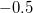

| データ解析のための統計モデリング入門 |
| データ解析のための統計モデリング入門 |
breaks= で、から区間 ずつに区切ったヒストグラムを描く。
ずつに区切ったヒストグラムを描く。
hist(data, breaks=seq(-0.5, 9.5, 1))
どのようなデータに対してポアソン分布によるモデル化を行うか。
データが非負の整数である（カウントデータ）
下限はゼロみたいだが上限はよくわからない
データでは平均と分散がだいたい等しい
上記に加えて、独立性や均質性も成り立っていること。
統計モデルの良さを評価する上では、予測の良さ（推定されたモデルが新しく得られたデータにどれくらいよく当てはまるか）という考え方が重要になる。
データは人間には見えない真の統計モデルから発生している
たまたま得られたデータからある統計モデルを仮定しパラメータを推定する
推定されたモデル分布が新たに得られるデータ分布をどれくらい予測できるか評価する
説明したい量は離散か連続か？
説明したい量の範囲は？
説明したい量の標本平均と標本分散の関係は？
| データ解析のための統計モデリング入門 |